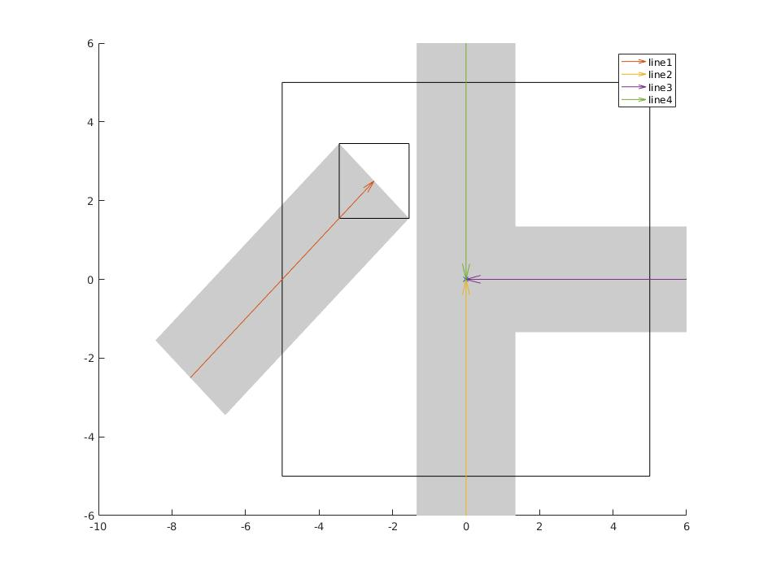
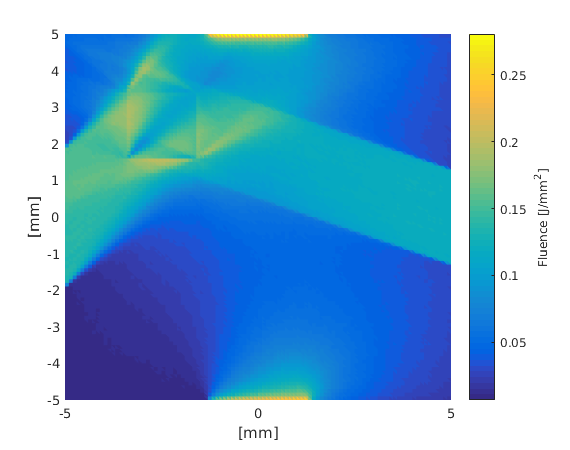

Directing light sources: directingls.m
This example demonstrates how to give custom directions to the light sources and how to use different built-in directivity patterns.
Contents
Set up the mesh and the medium
% Create a rectangular mesh xsize = 10; % width of the region [mm] ysize = 10; % width of the region [mm] dh = 0.1; % discretisation size [mm] vmcmesh = createRectangularMesh(xsize, ysize, dh); % Set constant background coefficients vmcmedium.absorption_coefficient = 0.03; % absorption coefficient [1/mm] vmcmedium.scattering_coefficient = 0.3; % scattering coefficient [1/mm] vmcmedium.scattering_anisotropy = 0.9; % scattering anisotropy parameter [unitless] vmcmedium.refractive_index = 1.3; % refractive index [unitless] % Turn the fields in vmcmedium into arrays so that each coefficient can be % set individually for each element vmcmedium = createMedium(vmcmesh, vmcmedium); rectangle_width = 1.9; rectangle_height = 1.9; rectangle_position=[-xsize/4 ysize/4]; % Find elements that are inside of a rectangle. % The rectangle is shown in the figure below. elements_of_the_rectangle = findElements(vmcmesh, 'rectangle', ... rectangle_position, ... rectangle_width, ... rectangle_height); % Set the optical coefficients inside the rectangle vmcmedium.absorption_coefficient(elements_of_the_rectangle) = 0.5; vmcmedium.scattering_anisotropy(elements_of_the_rectangle) = 0.0;
Set up the boundary and create light sources
createBoundary returns a structure which can be used to set the properties of each boundary element individually
vmcboundary = createBoundary(vmcmesh);
Set up 4 lightsources using 4 lines. The lines are shown in the figure below.

line1_start = [-3/4*xsize -ysize*1/4]; line1_end = rectangle_position; rectangle_diameter = sqrt(rectangle_width^2+rectangle_height^2); line_width=rectangle_diameter; line2_start = [0 -3/5*ysize]; line2_end = [0 0]; line3_start = [3/5*xsize 0]; line3_end = [0 0]; line4_start = [0 3/5*ysize]; line4_end = [0 0]; lightsource1 = findBoundaries(vmcmesh, 'direction', ... line1_start, ... line1_end, ... line_width); lightsource2 = findBoundaries(vmcmesh, 'direction', ... line2_start, ... line2_end, ... line_width); lightsource3 = findBoundaries(vmcmesh, 'direction', ... line3_start, ... line3_end, ... line_width); lightsource4 = findBoundaries(vmcmesh, 'direction', ... line4_start, ... line4_end, ... line_width);
Create and direct lightsources using different directivity patterns
% 1: Direct light source % % The 'lightsource' -field in vmcboundary sets the directivity pattern of % the lightsource. By 'direct' keyword, all photons are launched in the % same direction. vmcboundary.lightsource(lightsource1) = {'direct'}; % Create a direction vector for the light using the line that was used to % search boundary elements lightsource_direction = line1_end - line1_start; % x-component of the direction vmcboundary.lightsource_direction(lightsource1,1) = lightsource_direction(1); % y-component of the dircetion vmcboundary.lightsource_direction(lightsource1,2) = lightsource_direction(2); % This means that the direction vector is given in the coordinate space of % the mesh vmcboundary.lightsource_direction_type(lightsource1) = {'absolute'}; % 2: A Gaussian light source % % Create a light source with a Gaussian directivity profile. The initial % angles with respect to a given direction (by default, normal of the % boundary element) follow a Gaussian with sigma = 0.1 vmcboundary.lightsource(lightsource2) = {'gaussian'}; vmcboundary.lightsource_gaussian_sigma(lightsource2) = 0.1; % Tilt the lightsource by 22.5 degrees. This time, the direction is given in % the coordinate system of the boundary element: (0, 1) is the normal % direction and (1, 0) is directed along the boundary element vmcboundary.lightsource_direction(lightsource2,1) = sin(-pi/8); vmcboundary.lightsource_direction(lightsource2,2) = cos(-pi/8); % this direction was given with respect to the surface normal vmcboundary.lightsource_direction_type(lightsource2) = {'relative'}; % 3: Cosinic light source % % The initial angles follow a cosine distribution. Cosinic light sources % are useful to create light sources that are not unidirectional without % having to set any extra parameters. vmcboundary.lightsource(lightsource3) = {'cosinic'}; % 4: Isotropic light source % % Photons are launched to all inward directions with an equal probability. vmcboundary.lightsource(lightsource4) = {'isotropic'};
Run the Monte Carlo simulation
solution = ValoMC(vmcmesh, vmcmedium, vmcboundary);
ValoMC-2D -------------------------------------------- Version: v1.0b-118-g853f111 Revision: 131 OpenMP enabled Using 16 threads -------------------------------------------- Initializing MC2D... Computing... ...done Done
Plot the solution
hold on; patch('Faces',vmcmesh.H,'Vertices',vmcmesh.r,'FaceVertexCData', solution.element_fluence, 'FaceColor', 'flat','EdgeColor','none'); xlabel('[mm]'); ylabel('[mm]'); text(-xsize/2+0.4, 0, 'direct lightsource'); text(0, -ysize/2+0.4, 'gaussian tilted by 22.5 deg', 'HorizontalAlignment', 'center'); text(xsize/2-0.4, 0, 'cosinic', 'HorizontalAlignment', 'right'); text(0, ysize/2-0.4, 'isotropic', 'HorizontalAlignment', 'center'); c = colorbar; c.Label.String = 'Fluence [J/mm^2]'; hold off